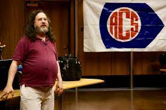

Breif Discription
Richard Matthew Stallman, also known by his initials, rms, is an American free software movement activist and programmer. He campaigns for software to be distributed in such a manner, so that its users receive the freedoms to use, study, distribute, and modify that software.
Richard shown pregnant with his 4th child